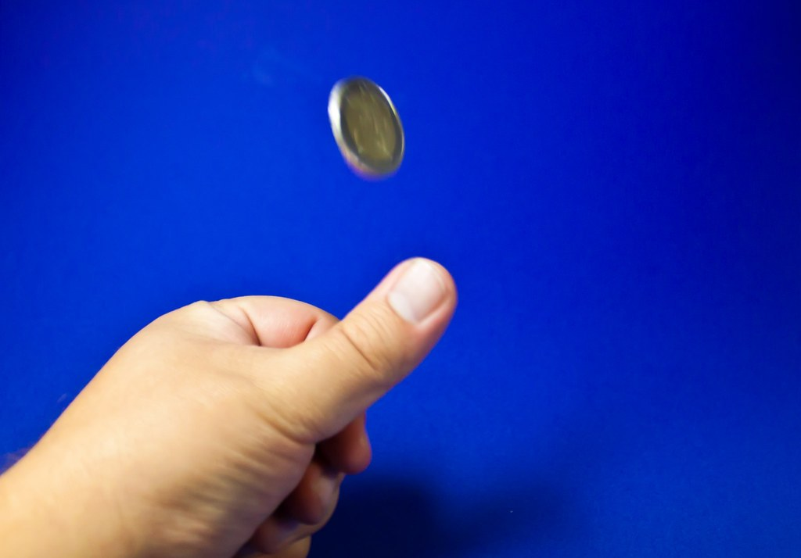
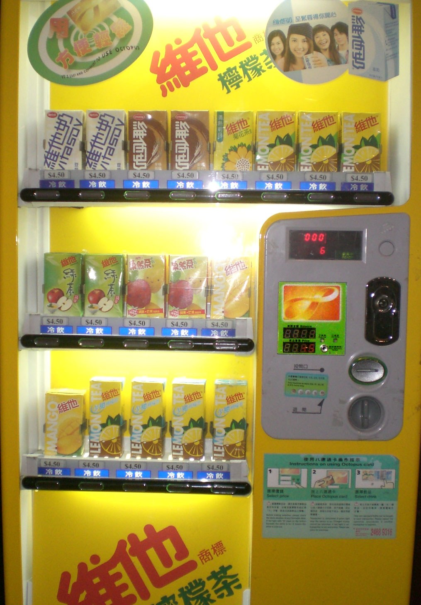
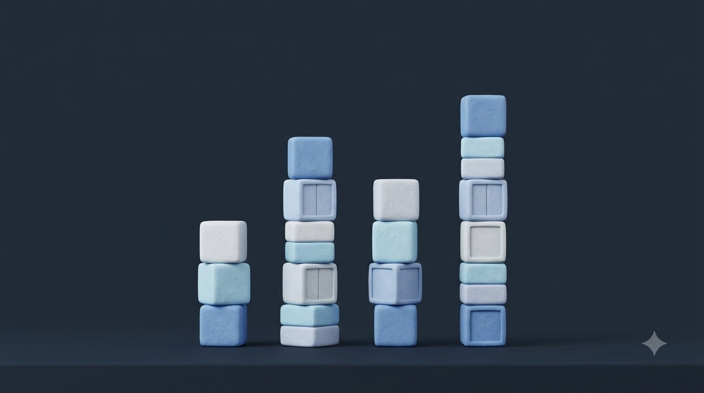
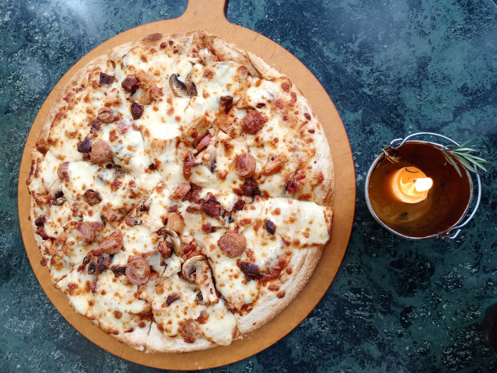
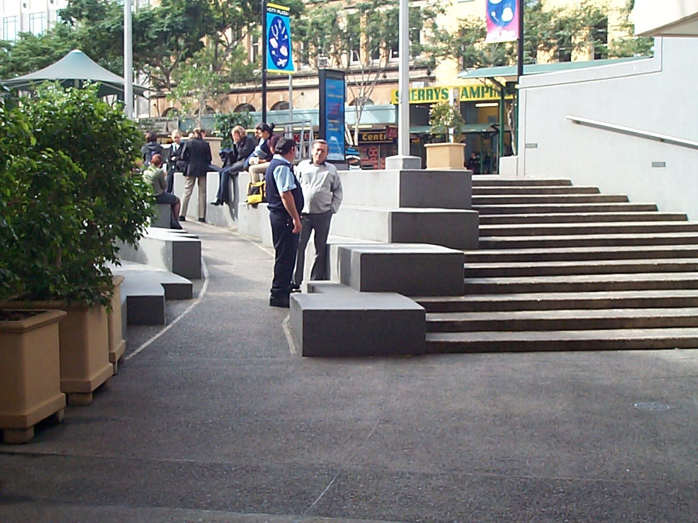
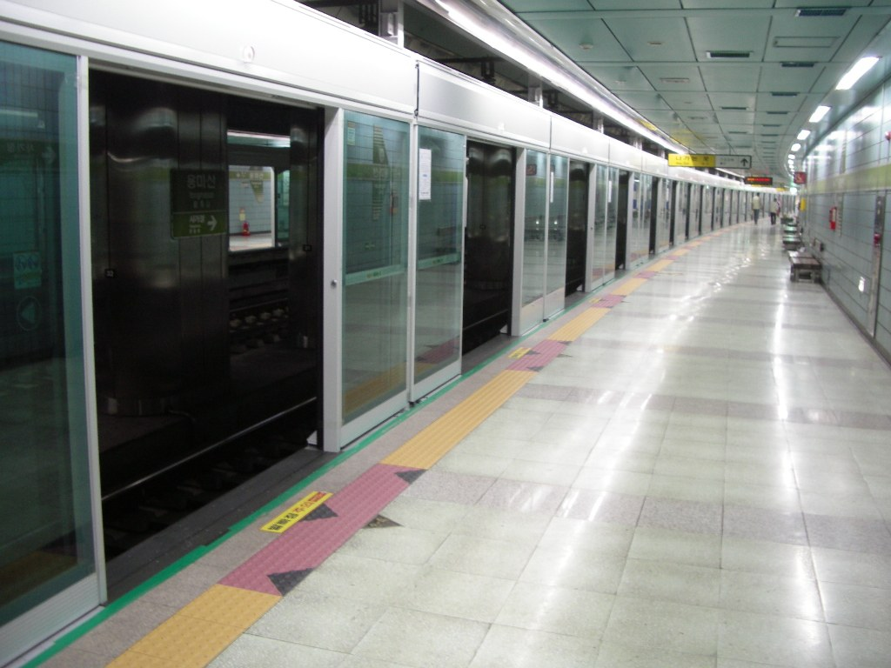
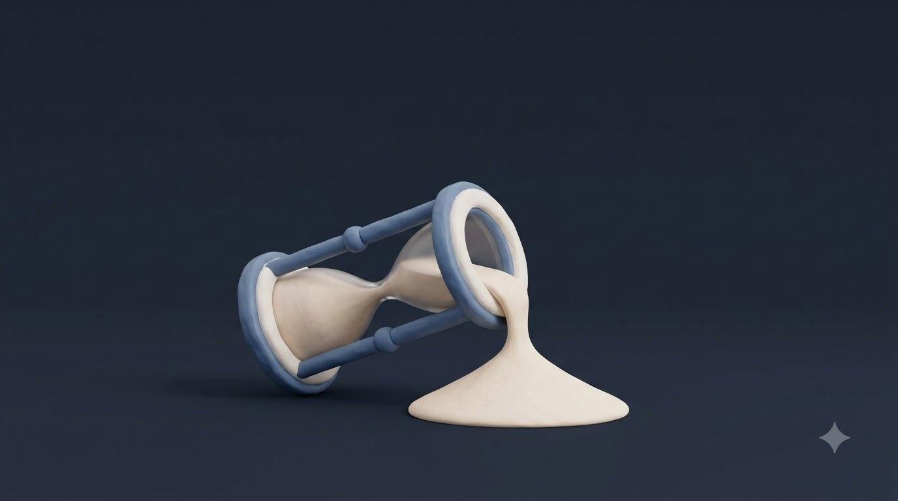
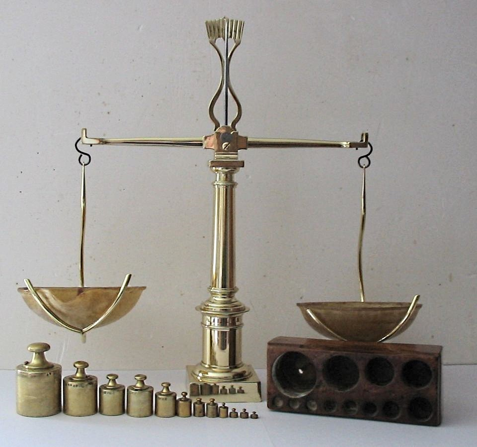
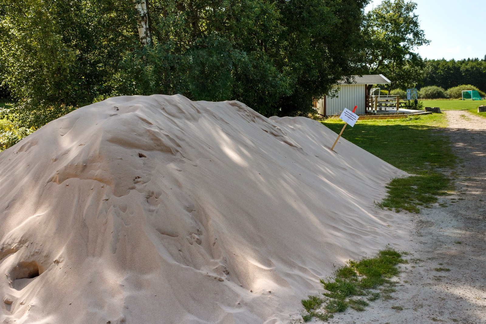
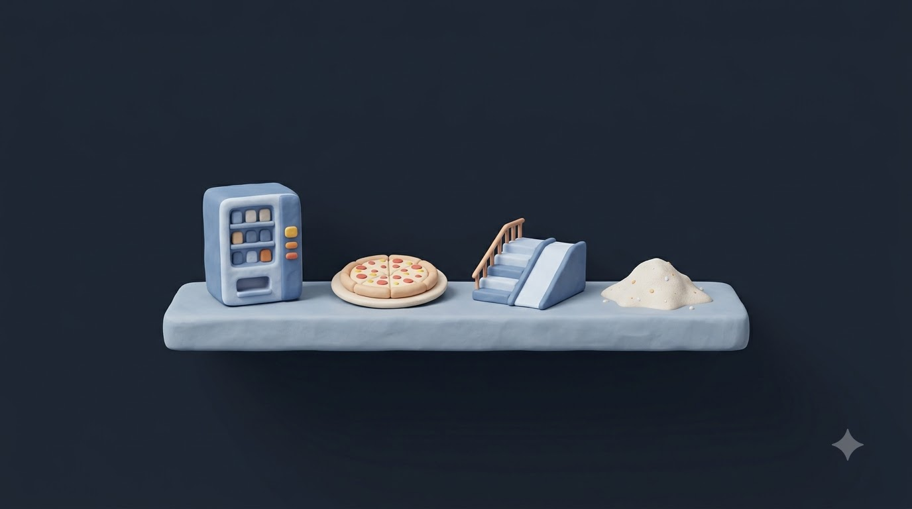

확률과 통계 · 1강
확률변수와
확률분포
Ⅲ. 통계 › 1. 확률분포
동전을 던지면
결과에 숫자를 붙일 수 있을까?
영상: Google Flow (Veo 3.1)로 생성
오늘 수업을 마치면 이렇게 할 수 있어요
학습 목표
확률변수와 확률분포의 뜻을 설명할 수 있다.
이산확률변수와 연속확률변수를 구별하고, 확률분포의 성질을 이용해 확률을 구할 수 있다.
Step 01
확률변수
Step 02
이산확률분포
Step 03
확률질량함수의 성질
Step 04
연속확률변수
한 개의 동전을 두 번 던져 볼까요?
생각 열기
앞면을 H, 뒷면을 T라고 할 때, 물음에 답해 보자.
이 시행의 표본공간 S를 구해 보자.
앞면이 나온 횟수를 X라고 할 때, 각 근원사건과 X의 값을 짝지어 보자.
S = { HH, HT, TH, TT }

사진: Scarygami · CC BY-SA 2.0
근원사건마다 실수 하나를 대응시키는 규칙
확률변수
확률변수
어떤 시행에서 표본공간의 각 근원사건에 하나의 실수를 대응시키는 관계
→ 앞면이 나온 횟수 X는 확률변수
확률변수는 보통 X, Y, Z, …로, 확률변수가 취하는 값은 x, y, z, … 또는 x₁, x₂, …으로 나타낸다.
버튼을 누르면 정해진 숫자가 나온다
확률변수는 자판기

비유사진: MApoCE · CC BY-SA
자판기
확률변수
자판기 버튼
→
근원사건 (HH, HT, …)
표시된 가격
→
확률변수 X의 값
가격이 같은 음료가 여러 개
→
HT, TH → 모두 X = 1
버튼 하나에 가격은 하나
→
근원사건마다 X의 값은 하나
값을 셀 수 있는 확률변수
이산확률변수와 확률분포
이산확률변수
확률변수 X가 취하는 값이 유한개이거나 자연수처럼 셀 수 있을 때
확률분포
X가 취하는 값 x₁, x₂, …, xₙ과 각 값에 대응하는 확률 p₁, p₂, …, pₙ 사이의 관계
확률질량함수
확률분포를 나타내는 함수
P(X = xᵢ) = pᵢ
(i = 1, 2, …, n)
값이 하나, 둘, 셋… 하고 블록처럼 셀 수 있으면 이산확률변수
이산확률변수 X가 값 x를 취할 확률은 기호로 P(X = x)와 같이 나타낸다.

AI 생성: Google Flow
동전 두 번 던지기 · 앞면의 횟수 X
확률분포를 표와 그래프로
| X | 0 | 1 | 2 | 합계 |
|---|---|---|---|---|
| P(X = x) | 1/4 | 1/2 | 1/4 | 1 |
- X = 0 : TT → 1/4
- X = 1 : HT, TH → 1/2
- X = 2 : HH → 1/4
- 확률을 모두 더하면 1
이산확률변수 X의 확률질량함수 P(X = xᵢ) = pᵢ
확률질량함수의 성질
0 ≤ pᵢ ≤ 1
각 확률은 0 이상 1 이하
p₁ + p₂ + … + pₙ = 1
확률을 모두 더하면 1
P(xᵢ ≤ X ≤ xⱼ) = pᵢ + … + pⱼ
구간의 확률은 그 안의 확률을 더한 것

비유사진: Mohammed Kateregga · CC0 1.0
피자 한 판 = 1
조각을 모두 모으면 다시 한 판
주머니에서 공 꺼내기 · 확률분포 구하기
예제
흰 공 3개, 검은 공 2개가 들어 있는 주머니에서 임의로 2개의 공을 동시에 꺼낼 때, 흰 공의 개수를 X라고 하자.
⑴ X의 확률분포를 표로 나타내시오. ⑵ P(X ≥ 1)을 구하시오.
P(X=0) = ₂C₂ / ₅C₂ = 1/10
P(X=1) = ₃C₁·₂C₁ / ₅C₂ = 6/10
P(X=2) = ₃C₂ / ₅C₂ = 3/10
| X | 0 | 1 | 2 | 합계 |
|---|---|---|---|---|
| P | 1/10 | 6/10 | 3/10 | 1 |
⑵ P(X ≥ 1) = 6/10 + 3/10 = 9/10
계단과 경사로
이산 vs 연속

비유사진: John Robert McPherson · CC0
계단 = 이산확률변수
한 칸, 두 칸… 값이 띄엄띄엄
예) 주사위 눈, 앞면의 횟수, 사람 수
경사로 = 연속확률변수
어느 높이에나 설 수 있다 → 범위 안의 모든 실수
예) 키, 몸무게, 기다리는 시간
이산에서 연속으로 · 히스토그램이 곡선이 된다
막대를 잘게 쪼개면
연속확률변수에서는 막대의 높이 대신 곡선 아래의 넓이가 확률이 된다.
기다리는 시간처럼 어떤 범위의 모든 실수 값을 취할 때
연속확률변수

사진: Kaitak89 · CC BY-SA 3.0
10분 간격 지하철역에 아무 때나 도착할 때, 기다리는 시간 X(분)
- 0 ≤ X ≤ 10인 모든 실수
- 확률 = 그래프 아래 넓이
연속확률변수 X (α ≤ X ≤ β)의 확률밀도함수 f(x)
확률밀도함수의 성질
f(x) ≥ 0
그래프는 x축보다 아래로 내려가지 않는다
y = f(x)와 x축, x = α, x = β로 둘러싸인 넓이 = 1
전체 확률은 1
P(a ≤ X ≤ b) = x = a, x = b 사이의 넓이
(단, α ≤ a ≤ b ≤ β)

AI 생성: Google Flow
이산확률변수는 확률의 합, 연속확률변수는 그래프 아래의 넓이로 확률을 구한다.
확률‘질량’함수와 확률‘밀도’함수, 이름에 담긴 뜻
질량 vs 밀도

비유사진: Poussin jean · CC BY-SA 3.0
추 = 확률질량함수
무게가 정해진 몇 개의 점에 몰려 있다
각 값마다 확률 P(X = x)가 있다

사진: W.carter · CC BY-SA 4.0
모래 = 확률밀도함수
무게가 고르게 퍼져 있다
한 점의 확률은 0, 구간의 넓이로 잰다
스스로 풀어 보세요 · 3문항
확인 문제
100원짜리 동전 3개를 동시에 던질 때, 앞면이 나오는 개수 X가 취하는 값을 모두 구하시오.
확률변수 X의 확률질량함수가 P(X = x) = kx (x = 1, 2, 3, 4)일 때, 상수 k의 값과 P(X ≥ 3)을 구하시오.
연속확률변수 X의 확률밀도함수가 f(x) = x/2 (0 ≤ x ≤ 2)일 때, P(0 ≤ X ≤ 1)을 구하시오.
AI 생성: Google Flow
오늘 배운 내용 한눈에 보기
정답과 정리
정답
1 0, 1, 2, 3
2 k(1+2+3+4) = 1 → k = 1/10
P(X ≥ 3) = 3/10 + 4/10 = 7/10
3 밑변 1, 높이 1/2인 삼각형의 넓이 → 1/4
핵심 정리

확률변수: 근원사건 → 실수 (자판기)
이산: 값이 띄엄띄엄 (계단)
P(X = xᵢ) = pᵢ, Σ pᵢ = 1 (피자)
연속: 범위 안의 모든 실수 (경사로)
확률 = 밀도함수 아래 넓이 (모래)
사진 · Wikimedia Commons 등 재사용 가능 라이선스
이미지 출처
| 슬라이드 | 사진 | 저작자 | 라이선스 |
|---|---|---|---|
| 생각 열기 | Coin tossing | Scarygami | CC BY-SA 2.0 |
| 자판기 | HK TST Space Museum Vending machine | MApoCE | CC BY-SA |
| 피자 | A whole pizza | Mohammed Kateregga | CC0 1.0 |
| 계단·경사로 | Access ramp co-located with stairs, Brisbane | John Robert McPherson | CC0 |
| 지하철 | Seoul subway Yongmasan station platform | Kaitak89 | CC BY-SA 3.0 |
| 추 | Balance à tabac 1850 | Poussin jean | CC BY-SA 3.0 |
| 모래 | Pile of sand at Brastad Arena | W.carter | CC BY-SA 4.0 |


AI 생성 (Google Flow): 인트로 영상 (Veo 3.1) · 학습 목표, 블록, 모래시계, 확인 문제, 선반 일러스트 (Nano Banana) · 그래프 애니메이션은 manim으로 직접 제작
수고하셨습니다
다음 시간: 이산확률변수의 기댓값과 표준편차